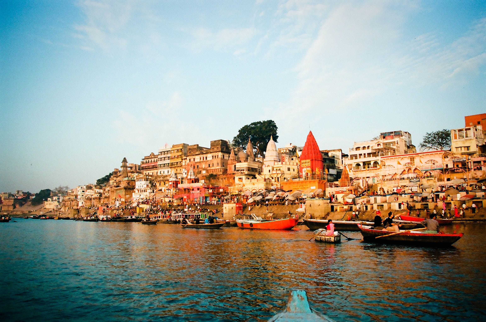

About Ganga
The sacred river that sustains millions and holds deep cultural significance
The Lifeline of India
The Ganges, also known as Ganga, is a trans-boundary river of Asia which flows through India and Bangladesh. The 2,525 km river rises in the western Himalayas in the Indian state of Uttarakhand, and flows south and east through the Gangetic Plain of North India.
The Ganga is the most sacred river to Hindus. It is also a lifeline to millions of Indians who live along its course and depend on it for their daily needs. It is worshipped as the goddess Ganga in Hinduism.
0
Kilometers Length
0
Million People Supported
0
Percent of India's Water
